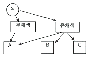
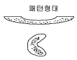

금속도장기능사 (2007-09-16 기출문제)
1과목: 색채
1. 먼셀(Munsell)의 주요 5원색은?
- 빨강, 노랑, 녹색, 파랑, 보라
- 빨강, 주황, 녹색, 남색, 보라
- 빨강, 노랑, 청록, 남색, 자주
- 빨강, 주황, 녹색, 파랑, 자주
(정답률: 알수없음)

2. 다음 중 동시대비와 가장 거리가 먼 것은?
- 색상대비
- 명도대비
- 보색대비
- 면적대비
(정답률: 80%)
3. 먼셀(Munsell) 표색계 표기가 5R 4/14인 경우, 채도를 나타내는 것은?
- 5
- R
- 4
- 14
(정답률: 알수없음)
4. 다음 중 가산혼합에 대한 설명으로 바른 것은?
- 색료를 혼합할 때 색 수가 많을수록 혼합 결과의 명도는 낮아진다.
- 컬러영화필름, 색채사진 등이 가산혼합의 예이다.
- 가산혼합의 3원색은 마젠타, 노랑, 시안이다.
- 2가지 이상의 색광을 혼합할 때 혼합 결과의 명도가 높아진다.
(정답률: 알수없음)
5. 색채 조화가 잘 되도록 하기 위한 계획으로 틀린 것은?
- 동화된 분위기를 얻기 위하여 동색상의 조화를 실시한다.
- 주제와 배경과의 대비를 생각한다.
- 색의 차고 따뜻한 느낌을 이용한다.
- 무채색의 사용은 되도록 피하는 것이 좋다.
(정답률: 73%)
6. 저명도와 저채도의 설명 중 옳은 것은?
- 저명도는 어둡고 저채도는 맑다.
- 저명도는 어둡고 저채도는 탁하다.
- 저명도는 밝고 저채도는 맑다.
- 저명도는 밝고 저채도는 탁하다.
(정답률: 알수없음)
7. 다음 색 중 명도가 가장 낮은 것은?
- 주황
- 보라
- 노랑
- 연두
(정답률: 알수없음)
8. 다음 그림은 색의 3속성을 나타낸 것이다. 여기서 A에 해당되는 요소는 무엇인가?

- 색상
- 명도
- 채도
- 명시도
(정답률: 알수없음)
9. 다음 배색 중 가장 따뜻한 느낌의 배색은?
- 파랑과 녹색
- 노랑과 녹색
- 주황과 노랑
- 빨강과 파랑
(정답률: 알수없음)
10. 색료혼합의 결과로 옳은 것은?
- 파랑(B) + 빨강(R) = 자주(M)
- 노랑(Y) + 청록(C) = 파랑(B)
- 자주(M) + 노랑(Y) = 빨강(R)
- 자주(M) + 청록(C) = 검정(BL)
(정답률: 알수없음)
11. 흰색에 대하여 추상적으로 연상되는 감정이 아닌 것은?
- 청결
- 순수
- 침묵
- 소박
(정답률: 알수없음)
12. 회색을 흰색 바탕 위에 놓으면 회색이 더욱 어둡게 보이는 현상은?
- 색상대비
- 명도대비
- 채도대비
- 보색대비
(정답률: 80%)
13. 녹막이도료에 관한 설명으로 틀린 것은?
- 공기, 수분, 유해가스의 접촉을 막는다.
- 화학적, 물리적으로 녹을 막는 작용을 한다.
- 중도 다음에 칠한다.
- 안료는 크롬산염을 사용하고 있다.
(정답률: 알수없음)
14. 퍼티 연마의 마무리를 할 때 사용하는 가장 적합한 연마지는?
- #60 ∼ 80
- #240 ∼ 320
- #400 ∼ 500
- #600 ∼ 1000
(정답률: 73%)
15. 인산염 화성처리의 장점은?
- 피막이 두터워서 외력(外力)을 가하여도 견디는 힘이 강하다.
- 굴곡, 강도에 강하기 때문에 화성처리 후의 변형 가공이 쉽다.
- 금속 피도물과 도료의 부착성이 증대된다.
- 화성처리 후 장시간 노출시키면 결정피막의 내식성이 증가된다.
(정답률: 알수없음)
16. 다음 중 착색안료가 아닌 것은?
- 징크 크로메이드
- 아연화
- 황연
- 카본블랙
(정답률: 47%)
17. 방청안료 중 가장 독성이 적은 안료는?
- 아연말
- 징크 크로메이트
- 염기성 크롬산 연
- 광명단
(정답률: 64%)
18. 주정도료에 관한 설명 중 틀린 것은?
- 내후성과 내열성이 나쁘다.
- 용제가 증발하여 수지가 도막으로 된다.
- 용제로서는 주로 휘발유를 사용한다.
- 목재에는 적합하나 경금속, 모르타르에는 부적합하다.
(정답률: 알수없음)
19. 다음 중 철강의 검은 녹과 관계없는 것은?
- 이삼산화철(Fe2O3)
- 산화철(FeO)
- 삼사산화철(Fe3O4)
- 산화알루미늄(Al2O3)
(정답률: 67%)
20. 난연성과 내약품성 및 내수성이 우수한 특징은 있으나 부착성이 나빠서 부착성이 좋은 프라이머를 필요로 하는 도료는?
- 염화비닐수지 도료
- 유성 도료
- 비닐졸 도료
- 에멀션 도료
(정답률: 91%)
2과목: 금속도장재료
21. 프라이머 중 연단이 주성분이며, 연단 이외에도 산화연을 함유시킨 것으로 철강의 방청을 목적으로 한 녹방지 도료는?
- 광명단 프라이머
- 징크 크로메이트 프라이머
- 래커 프라이머
- 오일 프라이머
(정답률: 알수없음)
22. 다음 특수 안료 중 온도에 따라 색상이 변화하는 안료는?
- 형광안료
- 시온안료
- 발광안료
- 축광안료
(정답률: 알수없음)
23. 알루미늄 피막 처리법에 해당 되지 않는 것은?
- 양극 산화 피막 처리법
- 인산염 처리법
- 크로메이트 처리법
- 블라스트 처리법
(정답률: 알수없음)
24. 용제의 휘발만으로 도막을 형성하는 도료는?
- 비닐수지도료
- 에멀젼도료
- 주정도료
- 래커
(정답률: 알수없음)
25. 다음 중 폴리싱 콤파운드(Polishing compound)의 주된 용도는?
- 연마제
- 건조제
- 백화방지제
- 방부제
(정답률: 알수없음)
26. 다음 중 내알칼리성이 가장 좋은 도료는?
- 에폭시수지 도료
- 에멀션 도료
- 유성 도료
- 비닐졸 도료
(정답률: 70%)
27. 탈지의 방법 중 물리, 기계적 탈지방법이 아닌 것은?
- 스크레이퍼법
- 에멀션 세척법
- 블라스트법
- 고온가열법
(정답률: 알수없음)
28. 크롬과 니켈의 합금으로 구성되어 있는 비철금속은?
- 냉연강판
- 함석판
- 브론즈메탈(Bronze metal)
- 스테인레스 강판
(정답률: 알수없음)
29. 도료용 용제의 구비조건으로 틀린 것은?
- 도료 또는 전색제에 대한 용해성이 좋을 것
- 불휘발 유분을 남기지 않고 전부가 증발 할 것
- 휘발분은 악취가 없고 독성이 없을 것
- 진한색을 갖고 있을 것
(정답률: 100%)
30. 열경화성 아크릴수지 도료의 특징이 아닌 것은?
- 내후성이 우수하며 광택이 좋다.
- 아미노 알키노 수지에 비해 소부온도가 낮다.
- 내약품성, 부착성, 내오염성이 좋다.
- 색상 보유력이 우수하다.
(정답률: 알수없음)
31. 조작이 간단하여 투명 도료나 수지 용액의 점도 측정에 사용되는 점도계는?
- 모세관 점도계
- 기포 점도계
- 스토머 점도계
- B형 점도계
(정답률: 알수없음)
32. 도장작업 중 기본적인 주의사항이 아닌 것은?
- 속건성 도료의 도장은 햇빛을 이용한 건조가 좋다.
- 저온 다습을 피한다.
- 바탕의 조성에 정성을 들인다.
- 도료의 품질을 조사하여 사용법에 주의한다.
(정답률: 알수없음)
33. 실내의 천장이나 벽 등 넓고 평활한 면을 도장하는데 능률적이며, 작업성도 붓 작업보다 대단히 뛰어난 도장은?
- 주걱도장
- 전착도장
- 롤러 브러쉬도장
- 정전도장
(정답률: 알수없음)
34. 중도용 도료에 대한 설명으로 틀린 것은?
- 하도와 상도의 부착을 좋게 하고 상도를 아름답게 하기 위하여 도장하는 것이다.
- 용제의 휘발만으로 도막을 형성하는 도료이다.
- 퍼티의 흡입을 방지할 목적으로 사용한다.
- 중간 도장을 두꺼운 도막으로 하고 연마지로 그 대부분을 연마하여 평탄한 면을 만들기 위한 것이다.
(정답률: 알수없음)
35. 도막에 녹, 부풀음이 발생하는가를 시험하는 것은?
- 가열시험
- 염수분무시험
- 침전시험
- 내습시험
(정답률: 73%)
36. 피도물에 도료를 흘려 내려서 도장하는 방법은?
- 플로우 도장
- T.F.S 도장
- 텀블링 도장
- 분체 도장
(정답률: 알수없음)
37. 전처리 작업의 중요한 목적으로 틀린 것은?
- 소지면과 도료의 친화력과 습윤성을 없앤다.
- 소지면을 안정화하여 내식성을 향상시킨다.
- 소지면에 부착, 생성된 이물질을 완전히 제거한다.
- 소지면의 돌출부를 제거하여 소지면을 평탄하게 한다.
(정답률: 80%)
38. 금속의 작은 입자를 분사시켜 제청하는 방법은?
- 샌드 블라스트법
- 쇼트 블라스트법
- 원심 블라스트법
- 위트 블라스트법
(정답률: 100%)
39. 분무 도장시 스프레이 건의 패턴 형상이 그림과 같은 형태가 되었다면 그 원인은?

- 도료의 분출량이 과다하다.
- 도료의 점도가 높다.
- 스프레이 공기캡에 측면 구멍이나 보조 구멍의 일부가 막혔다.
- 분무압력이 높다.
(정답률: 알수없음)
40. 유기용제에 의한 재해요소가 아닌 것은?
- 화재
- 감전
- 중독
- 폭발
(정답률: 알수없음)
3과목: 금속도장
41. 적외선 건조 장치에서 건조에 사용되는 열에너지 형태는?
- 대류열
- 복사열
- 전도열
- 간접열
(정답률: 알수없음)
42. 세척법 중 효능은 작지만 사용방법이 간단하여 많이 사용되는 것으로, 심한 상태의 오염물을 제거하기 위한 효과적인 탈지 방법의 보조적인 방법으로 주로 사용되는 것은?
- 산세척법
- 알칼리세척법
- 용제세척법
- 에멀션세척법
(정답률: 알수없음)
43. 건성유를 주성분으로 한 것으로 도장이 용이하며, 특히, 붓 작업이 쉽고 휘발성이 적기 때문에 1회에 두꺼운 도막이 가능한 도료는?
- 유성 도료
- 비닐졸 도료
- 에멀션 도료
- 주정 도료
(정답률: 알수없음)
44. 정전 도장시 발생하는 백화(blushing) 현상의 원인이 아닌 것은?
- 하도 도막이 두꺼울 때
- 도장 환경이 고온 다습한 경우
- 피도물이 젖어 있을 때
- 사용 용제의 증발 속도가 빠를 때
(정답률: 알수없음)
45. 안전, 보건표지의 종류와 색상이 잘못 연결된 것은?
- 금지표지 - 빨강
- 정지표지 - 노랑
- 안내표지 - 녹색
- 지시표지 - 파랑
(정답률: 알수없음)
46. 다음 중 안료의 역할이 아닌 것은?
- 도장시 건조 속도를 조절한다.
- 도료에 유동성을 준다.
- 도막에 내구력, 기계적 강도를 보강해 준다.
- 도막에 색채를 부여한다.
(정답률: 알수없음)
47. 일반적인 도장 공정 순서로 옳은 것은?
- 하도 → 바탕조정 → 퍼티 및 연마 → 광택 마무리 → 중도 → 상도
- 바탕조정지 → 하도 → 퍼티 및 연마 → 중도 → 상도 → 광택 마무리
- 바탕조정 → 퍼티 및 연마 → 중도 → 광택 마무리 → 수연 → 상도
- 바탕조정 → 상도 → 퍼티 및 연마 → 중도 → 하도 → 광택 마무리
(정답률: 100%)
48. 전착도장의 단점 설명으로 틀린 것은?
- 부착성이 우수하지 않다.
- 전력의 소비가 많으며 설비비가 많이 든다.
- 피도물이 도전성이 없으면 도장이 곤란하다.
- 가열 온도가 높고 색의 교환은 거의 불가능하다.
(정답률: 알수없음)
49. 도료를 보관하는 곳으로 가장 적합한 장소는?
- 어둡고, 밀폐된 창고
- 햇빛이 잘 드는 밀폐된 창고
- 통풍이 잘 되고 차광을 알맞게 한 내화구조의 창고
- 습기가 많은 내화구조의 창고
(정답률: 알수없음)
50. 열풍 대류 건조 장치 중 오븐의 구성 형식이 건조로에 해당되지 않는 것은?
- 터널로
- 사다리꼴로
- 캐비넷형로
- 열풍 발생로
(정답률: 알수없음)
51. 스프레이 건의 구조를 설명한 것 중 틀린 것은?
- 공기 캡은 주 중심 구멍, 측면 공기 구멍, 보조 공기 구멍으로 구성되어 있다.
- 일반 도료용은 내부 혼합식이 사용되고, 고점도나 특수도료는 외부 혼합식이 사용된다.
- 조절부는 공기량 조절 장치, 도료 분출량 조절 장치, 패턴 조절 장치로 이루어져 있다.
- 도료 노즐은 도료 통로와 공기 통로로 이루어져 있고 열처리된 강철계 합금으로 만들어진다.
(정답률: 80%)
52. 인산염 피막 특징 설명으로 틀린 것은?
- 설비가 간단하여 대량 생산에 부적합하다.
- 내식성이 있고 마모성이 강하다.
- 피막은 전기를 통하지 않고 녹이 번지는 것을 막는다.
- 재질이나 목적에 따라 여러 가지 품종을 선택할 수 있다.
(정답률: 91%)
53. 스프레이 건을 사용한 후의 일반적인 손질 방법으로 잘못된 것은?
- 세척액을 도료용기에 넣어 세척액을 분산시켜 도료 통로를 세척시킨다.
- 공기 캡, 도료 노즐, 기타 몸체를 물로 깨끗이 닦는다.
- 도료 노즐, 기타 니들, 당김쇠 등의 마찰 부분에는 기름칠을 한다.
- 니들 조정 패킹, 공기 조정 패킹 등의 패킹 부위부터 새는 데가 없나 점검한다.
(정답률: 70%)
54. 스크레이퍼 탈청 작업 중 이물질이 눈에 들어갔을 때 가장 올바른 치료방법은?
- 핀셋으로 하나하나 집어낸다.
- 에어로 불어낸다.
- 수건이나 비눗물로 닦아 낸다.
- 전문의의 조치를 받는다.
(정답률: 알수없음)
55. 크레이터링(cratering) 현상에 대한 대책으로 틀린 것은?
- 중간에 필터를 부착시킨다.
- 에어로 불어낸다.
- 상도 도료에 알코올을 첨가하여 도장한다.
- 용해성이 양호한 용제를 사용하여 유동성을 높인다.
(정답률: 70%)
56. 에어 컴프레서 관련 기기 중 혼탁액인 드레인을 제거하는 것은?
- 공기 청정기
- 공기 감압밸브
- 공기 탱크
- 배관
(정답률: 90%)
57. 정전 도장 작업시 주의사항으로 틀린 것은?
- 건(gun)을 시너 속에 담글 것
- 고압 발생기는 접지할 것
- 고압 발생기는 도장 부스 내에 설치하지 않을 것
- 필터는 정기적으로 청소 할 것
(정답률: 알수없음)
58. 붓 도장에 사용하는 붓 중 건조가 빠른 도료는 붓 사용시 충분히 적셔 주어야 하며, 끝이 부드러운 것을 필요로 하는 붓은?
- 래커 붓
- 페인트 붓
- 바니시 붓
- 수성 붓
(정답률: 알수없음)
59. 나무주걱에 대한 설명 중 틀린 것은?
- 노송나무의 곧은 결이나 벚나무 등으로 만든다.
- 반죽이나 바탕 붙임, 버팀 붙임 등에 사용된다.
- 도장 작업자에 따라서 직접 제작이 가능하다.
- 주로 원형으로 만들어서 사용한다.
(정답률: 알수없음)
60. 다염기산과 다가알콜을 주로 한 에스테르를 각종 오일(oil) 또는 지방산으로 변성한 합성수지로 내구성이 우수하고 안료의 분산이 쉬운 특성을 가진 도료는?
- 비닐 수지 도료
- 알키드 수지 도료
- 에폭시 수지 도료
- 폴리우레탄 수지 도료
(정답률: 20%)